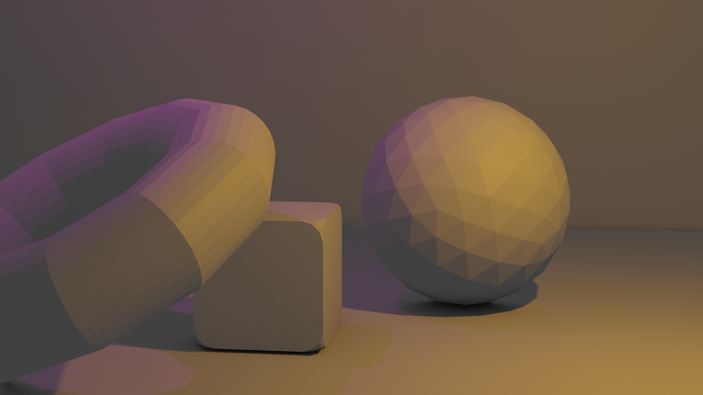
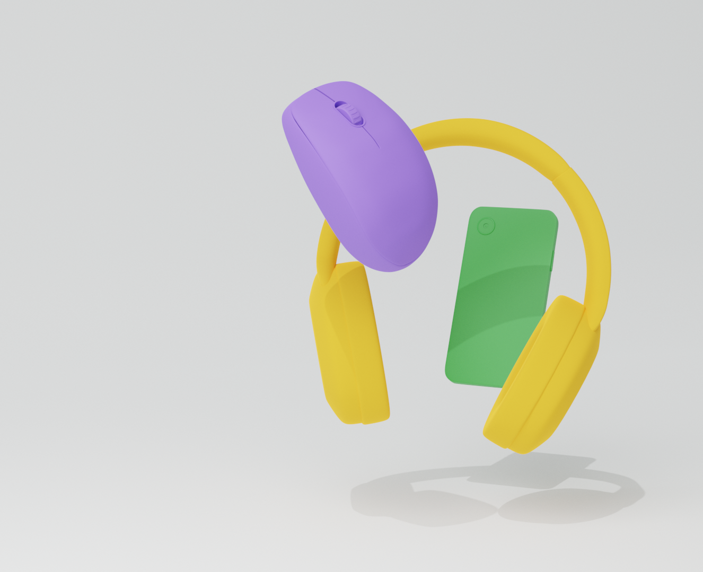
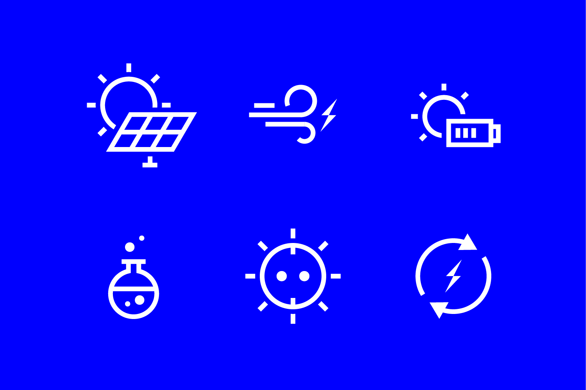
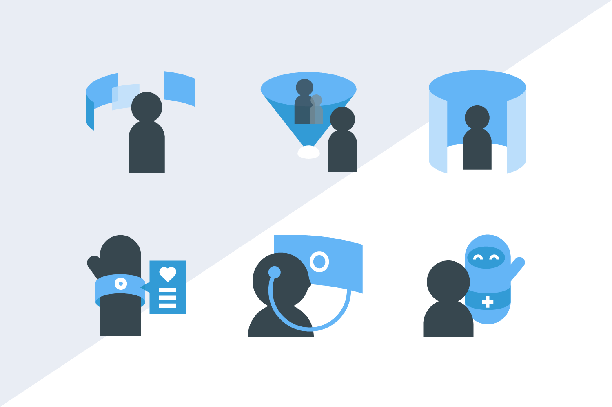
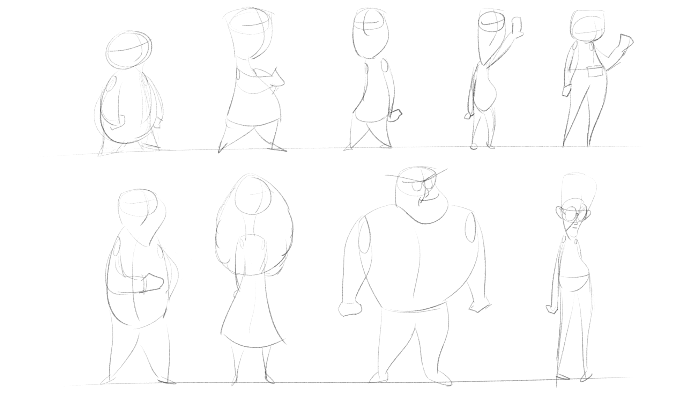
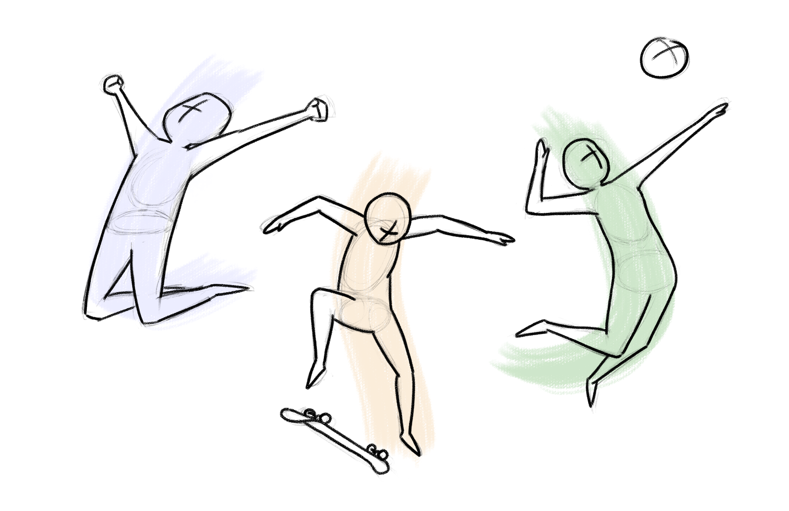
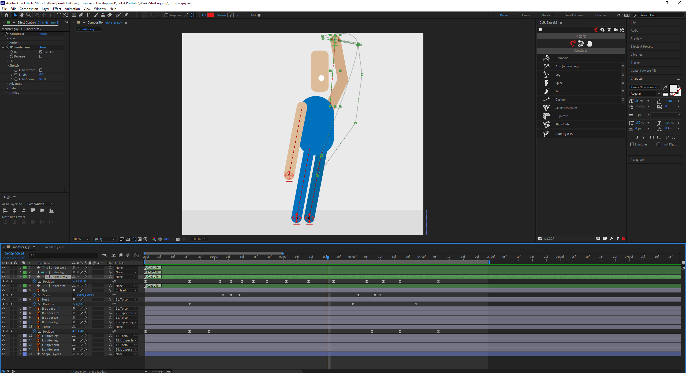
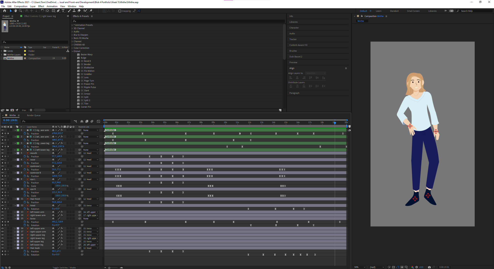

Leerdoel 1
Objecten maken en afbeeldingen renderen in Blender
Het eerste blok van de minor heb ik besteed aan het leren van het modelleerprogramma Blender. Ik wilde graag Blender leren om 3D elementen toe te kunnen voegen aan mijn persoonlijke website. Ook leek het mij een leuke uitdaging om een nieuw programma te leren. Mijn eerste paar weken heb ik vooral besteed aan het kijken van uitlegvideo’s en het uitproberen van verschillende tools. Zo heb ik een goed beeld kunnen vormen van de mogelijkheden en de tijd die ik kwijt ben bij het maken van de modellen.
Hierna ben ik aan de slag gegaan met het modelleren van elektronische apparaten die ik in mijn eindproduct wilde verwerken. Dit heeft veruit het meeste tijd gekost aangezien ik een aantal keer vastgelopen was (hoort er ook bij). Naast het modelleren heb ik ook wat tijd besteed om de basistheorieën van belichting en composities op te nemen. Na vijf weken heb ik veel kunnen leren over het programma en bewonder ik het werk van 3D artiesten nog veel meer.
Leerdoel 2
Het ontwerpen van iconen voor websites of applicaties
Het tweede blok van de minor heb ik besteed aan het ontwerpen van iconen in Illustrator. Graag wilde ik meer leren over werkproces bij het maken van iconen. Ook vond ik het een nuttig onderwerp om aandacht aan te besteden. Ik heb dit blok elke week een nieuwe icon set gemaakt met een nieuw thema en in een andere stijl, om mijzelf verder uit te dagen. Bij de eerste icon sets vond ik het erg lastig om consistent in de stijl te werken. Wel was het erg leuk om elke week een nieuw thema en stijl uit te kiezen.
De laatste weken kreeg ik een beter gevoel bij het bedenken en uitwerken van ideeën die ik voor een thema had. Omdat ik veel met het programma heb gewerkt kon ik ook sneller ideeën uitwerken en kreeg ik de mogelijkheid om meer te proberen. Met behulp van LinkedIn Learning en andere uitlegvideo's heb ik in vijf weken veel informatie kunnen vinden over het ontwerpen van iconen. Ik vond dit een erg leuk blok en ik ben trots op mijn resultaten.
Leerdoel 3
Karakters leren tekenen om een idee probleem of taak te illustreren
Het derde blok van de minor leek mij leuk om te besteden aan het tekenen van karakters. Ik wilde al een lange tijd online tekenen proberen, en dit was de perfecte mogelijkheid. De eerste weken heb ik een aantal video’s gekeken en ben ik zelf dingen gaan uitproberen om mijn eerste karakter te tekenen. Ik was toen redelijk teleurgesteld met het resultaat.
Omdat ik weinig verbeteringen zag in mijn werk had ik weinig motivatie om meer te gaan tekenen, waardoor ik wat vertraging ben opgelopen. Uiteindelijk vond ik het een redelijk zinvol leerdoel omdat ik nu realiseer hoe lastig het is, en hoeveel tijd het kost om tot een mooi resultaat te komen.
Leerdoel 4
Karakters en objecten animeren in Adobe After Effects
Het laatste blok heb ik besteed aan het animeren van karakters en objecten in After Effects. Ik had al een korte introductie gehad met AE maar het animeren van karakters heb ik nog nooit geprobeerd. Voor de website leek het ons erg leuk om de karakters die Mirthe heeft ontworpen tot leven te laten komen. Hier heb ik de laatste paar weken mijn tijd in gestopt.
De eerste paar weken heb ik enorm veel video’s gekeken om een indruk te krijgen van alle aspecten die spelen bij character animation. Hierna ben ik een aantal van deze theorieën gaan toepassen in de animaties van de karakters om ze enige personaliteit te geven. De theorieën van animeren zijn ontzettend goed te begrijpen maar het toepassen ervan is ontzettend uitdagend. Ik kan nog steeds niet bevatten hoe getalenteerd sommige animators zijn.
